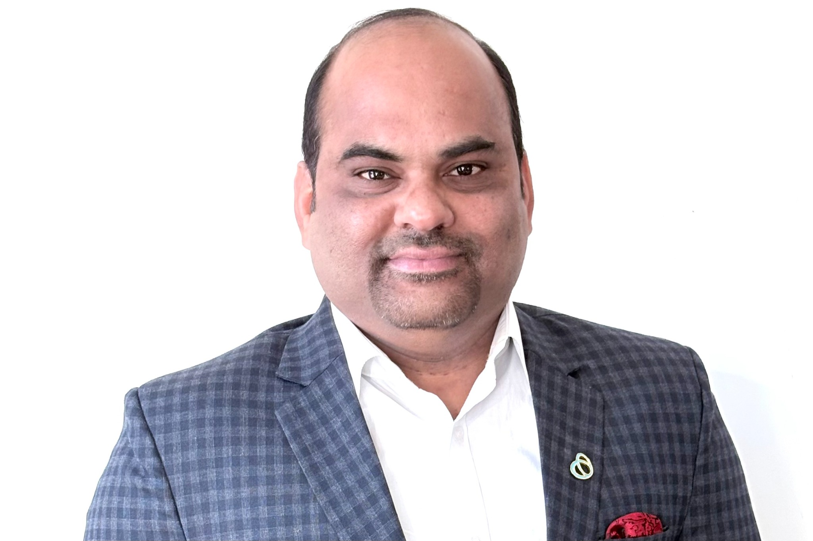

Santosh Kumar Vududala
GenAI Automation Architect at AIG
GenAI Automation Architect at AIG18+ Years ExperienceIEEE Senior Member156+ Web of Science Peer ReviewsQ1 Journal Reviewer30+ Research Publications
BCS Fellowship Portfolio
This portfolio presents evidence of professional responsibility, measurable impact, consultancy, leadership, mentoring, judging, authorship and recognition across enterprise technology and financial-services environments.
Responsibility
Enterprise GenAI Quality Engineering leadership for AIG Claim Assist. I lead an 18-member QA and automation team and provide technical direction across automated testing, GenAI validation, CI/CD execution, defect risk assessment, release readiness and production quality approval. The program supports UK Financial Lines, US Financial Lines and US Casualty across nine claim types.
Impact: 60% reduction in claim-handling time, 360K+ annual efficiency hours, approximately $20–22M annual operational savings, and a roadmap extending through 2030 across 21 countries.
Explore Responsibility →Mentoring & Coaching
I have supported the development of 120+ IT professionals through Centers of Excellence, project teams and independent mentoring. My coaching covers software testing, automation, ETL/data validation, RPA, AI-driven testing, GenAI and quality engineering.
International reach: 72 ADPList mentoring bookings, 2,160 mentoring minutes and professionals from 8 countries, with repeated Top 1%, Top 10, Top 50 and Top 100 Mentor recognition.
Explore Mentoring & Coaching →Consultancy
18+ years of enterprise technology and quality engineering experience across AIG, Bank of America and TIAA, with practical leadership in GenAI, intelligent automation, AML, ETL, cloud/data transformation and enterprise application quality.
My consultancy approach connects technical strategy with measurable delivery outcomes through automation, structured data validation, stakeholder alignment, UAT coordination and risk-based quality governance.
Explore Consultancy →Awards
Recognition across competitive technology awards, international innovation, business leadership, professional service, fellowship and client appreciation.
Highlights include 2nd Place in Automation Anywhere #BotGames 2021, international recognition in 2024–2025, SCRS Fellowship, IEEE Senior Member standing, ADPList mentor recognition and multiple HTC/TIAA client awards.
Explore Awards →